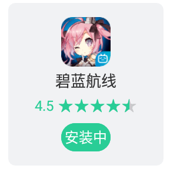

——看啊还是温暖的对吧？
“啊啊啊啊柴郡猫猫好可爱,不行,我要给自己做个看板娘”——色欲上头的无雨如是想，说干就干。
bing：提取live2d 碧蓝
结果：似乎看起来可行
github：live2d-widget get!
夜神模拟器安装！碧蓝航线下载！
接下来就是血压从小头来到了大头：APP死活安装不上去，hexo d 的命令执行报错，npm 无法执行 npm install -g npm
啊啊啊啊啊，一堆问题！时间全他妈花在处理问题上了。
真就安装一年没法安装上啊
npm这个应该是被锁定了,一会尝试安全模式看看.
先弄别的吧.
给自己的logo换了颜色,很好看的miku色
miku色.title { text-decoration: none; color: rgb(43, 122, 128); font-size: 2rem; }
他娘的,真就重启下电脑就好了,碧蓝航线终于下下来了.
黄色游戏都不会下载,说出去都丢人.
终于更新好碧蓝航线了,只能说,6G的资源,令人感叹.
现在的游戏,都这个样子,疯狂塞资源,强奸玩家硬盘.
一来我确实有指责这种行为,(碧蓝这类不在我职责行列,毕竟它游戏点,买点就在贴图声音等资源上)
二来这种行为会导致越来越多啥也不懂的小白玩家以容量论英雄,这是不合理的,也是不好的.
好,看我想办法解包一下碧蓝航线,小柴郡我来了嘿嘿嘿.
算了,明天再搞吧,真累人.
今天稍微弄了一下代码高亮.然后稍微动了动小手,实现了
yourcode>rainrian>mycode